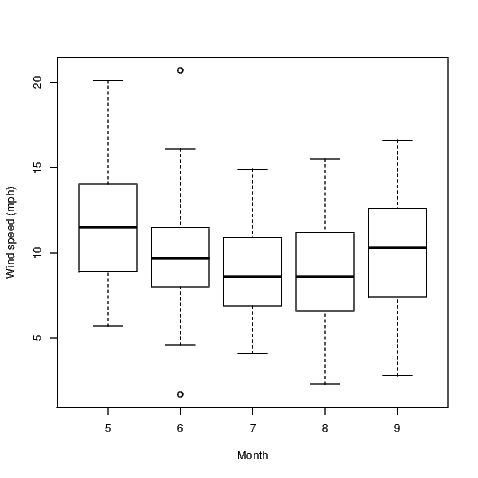
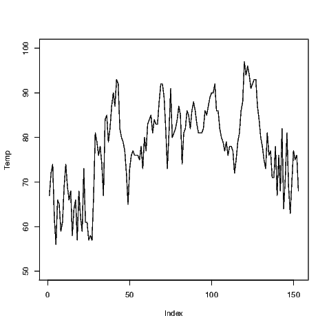
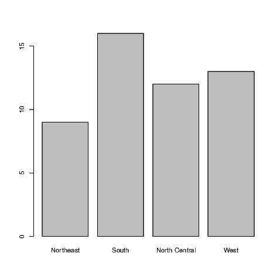

Chapter 7
LURN… To Create Simple Graphs
This chapter illustrates the construction of some basic exploratory data analysis
graphs. More complex graphs are considered in Chapter 15, although at times we
will see graphs presented in conjunction with particular statistical analysis
techniques in other chapters. In this chapter, we concentrate on data taking
continuous values initially, but a short section on graphs for discrete valued
variables is also included.
There are many ways to create statistical graphs. The traditional method uses
one of the base R packages, but in recent years, the ggplot2 package has gained
considerable attention. The presentation of both styles of graph are given
throughout this chapter. You will need to ensure the ggplot2 package is available
for use in your R session by issuing the command:
’data.frame’: 153 obs. of 6 variables:
$ Ozone : int 41 36 12 18 NA 28 23 19 8 NA ...
$ Solar.R: int 190 118 149 313 NA NA 299 99 19 194 ...
$ Wind : num 7.4 8 12.6 11.5 14.3 14.9 8.6 13.8 20.1 8.6 ...
$ Temp : int 67 72 74 62 56 66 65 59 61 69 ...
$ Month : int 5 5 5 5 5 5 5 5 5 5 ... $ Day : int 1 2 3 4 5 6 7 8 9 10 ...
It is common for R users to access the variables after issuing the command
The detach() command undoes the attach() command. To remove the
“attachment", you will issue the command detach(airquality).
You could look at the help file for this data if you wanted to learn its complete
story using ?airquality. It tells us that the data are for daily readings of the
following air quality values for May 1, 1973 (a Tuesday) to September 30, 1973 (a
Sunday).
- Ozone: Mean ozone in parts per billion from 1300 to 1500 hours at
Roosevelt Island
- Solar.R: Solar radiation in Langleys in the frequency band 4000–7700
Angstroms from 0800 to 1200 hours at Central Park
- Wind: Average wind speed in miles per hour at 0700 and 1000 hours at
LaGuardia Airport
- Temp: Maximum daily temperature in degrees Fahrenheit at La Guardia
Airport.
This data suits our purposes for the majority of examples in this chapter but
we will also need to look at another data set for the discussion of graphs for
discrete valued variables.
7.1 Histograms
Like many graphical functions in R, the hist() command will attempt to make a
suitably attractive histogram with the minimum of input from the user.
Exhibit 7.1 shows what results from the simplest application of the hist()
command.
Note that the figure created has default settings for the main title, axis labels
and that the number of classes (also called bins) and the cutoffs between them
have been chosen automatically. Various methods exist for these choices, but it is
my recommendation that the user find out what happens when the default
settings are chosen and then alter only what is actually necessary. For example,
graphs in this document do not always need the default title inserted so we need
to suppress the default action if we want to remove the title. We may also want
more informative axis labels. Both of these alterations are done for the creation
of Exhibit 7.2. The need to know what is printed in a histogram was a
primary motivator for the development of the BrailleR package and is one
of the examples given in Section 17.2 on providing text descriptions of
graphs.
Exhibit 7.1: Histogram of Average wind speed in miles per hour at 0700 and
1000 hours at LaGuardia Airport. Obtained from the air quality data set.

This is a histogram, with the title: Histogram of Wind
"Wind" is marked on the x-axis.Tick marks for the x-axis are at: 0, 5, 10, 15, and 20
There are a total of 153 elements for this variable.
Tick marks for the y-axis are at: 0, 10, 20, and 30
It has 11 bins with equal widths, starting at 0 and ending at 22 .
The mids and counts for the bins are:mid = 1 count = 1mid = 3 count = 4
mid = 5 count = 11mid = 7 count = 38mid = 9 count = 27
mid = 11 count = 38mid = 13 count = 10mid = 15 count = 17
mid = 17 count = 4mid = 19 count = 1mid = 21 count = 2
link to accessible SVG file: (requires correct browser)
A note on the visual appearance of the standard histogram for blind
users
A histogram uses rectangles to represent the counts or relative frequencies of
observations falling in each subrange of the numeric variable being investigated.
The rectangles are standing side by side with their bottom end at the
zero mark of the vertical axis. The widths of the rectangles are usually
constant, but this can be altered by the user. A sighted person uses the
heights and therefore the areas of the rectangles to help determine the
overall shape of the distribution, the presence of gaps in the data, and any
outliers that might be present. As with most graphs created by the base
graphics package, the axes do not join at the bottom left corner and are
separated from the area where the data are being plotted. Tick marks are
automatically chosen for the data, and the axes may not extend past the ends of
variables being plotted. The vertical axis for frequency always starts at
zero.
7.2 Basic annotations to graphs
Exhibit 7.2: Histogram of Average wind speed at 0700 and 1000 hours at
New York’s LaGuardia Airport. Obtained from the air quality data set.
> hist(Wind, xlab="Average wind speed (mph)", main="")

This is a histogram, with the title: Histogram of Wind
"Wind" is marked on the x-axis.Tick marks for the x-axis are at: 0, 5, 10, 15, and 20
There are a total of 153 elements for this variable.
Tick marks for the y-axis are at: 0, 10, 20, and 30
It has 11 bins with equal widths, starting at 0 and ending at 22 .
The mids and counts for the bins are:mid = 1 count = 1mid = 3 count = 4
mid = 5 count = 11mid = 7 count = 38mid = 9 count = 27
mid = 11 count = 38mid = 13 count = 10mid = 15 count = 17
mid = 17 count = 4mid = 19 count = 1mid = 21 count = 2
link to accessible SVG file: (requires correct browser)
Variable names should be informative but aren’t always what we want to see in
graphs. Notice that in Exhibit 7.2, I’ve made the x-axis label more informative by
indicating the units of measurement for the wind speed. As I already have a
caption for my Exhibit, I have chosen to remove the default title by adding the
argument main="" to the hist() command.
Aside from the alteration of the default axis label and the change in the main
title for our histograms, we could make quite a number of changes. The hist()
function allows the user various options for the way the bars are filled in for
example. It’s often worth checking the default behaviour and then seeing if the
resulting graph is what you want. If it isn’t, then investigate your options by
looking at the relevant help file; in this case type ?hist to get to the help for the
hist() function.
Other graphs we create will show points marked with small hollow circles; we
may wish to make these circles smaller, joined by line segments, filled in, a
different colour or combinations of these attributes. The par() function should be
investigated to find out what is possible. Most graph functions allow the user the
option of adding arguments that will be passed directly to the par() function to
obtain the same behaviour. Investigate the graphical parameters at some stage
using ?par but be warned, there are lots of adjustments that can be made.
Experimenting is really the only option when it comes time to get your graph
looking perfect.
Additional text and/or lines can be added to some graph types. It may prove
useful to show the line of best fit along with the data (illustrated in Chapter 12)
for example. We’ll see how to do the fancy things in Chapter 15.
7.3 Other univariate summary graphs
Histograms aren’t the “be all and end all" for univariate summary graphs. As a
case in point, they aren’t at all useful for small sample sizes. Various other graphs
appear in introductory statistics courses and that is why they appear here. I
don’t mean to support one over another at all — that’s up to you to
determine.
7.3.1 Boxplots
Boxplots show us quickly the shape of the distribution of a sample. They show the
median, lower and upper quartiles, and the minimum and maximum of a sample.
They will also identify points as outliers if these points are too far from the bulk
of values in the sample.
Exhibit 7.3 shows us the boxplot for the average wind speed at LaGuardia
airport. Notice that I have added an additional command to set up the size of the
graph window. The windows() command has various aliases — x11(), X11(),
win.graph() — none of which are required if the standard width and height of
the graph window are acceptable. You may wish to see why I’ve changed the
height of the graph window by ignoring the windows() command from
Exhibit 7.3
Exhibit 7.3: Boxplot of Average wind speed in miles per hour at 0700 and
1000 hours at LaGuardia Airport. Obtained from the air quality data set.
> ## windows(7, 5)> boxplot(Wind, horizontal=TRUE, xlab="Wind speed (mph)")

This graph has a boxplot printed horizontallywith the title:"" appears on the x-axis.
"" appears on the y-axis.Tick marks for the x-axis are at: 5, 10, 15, and 20
This variable has 153 values.An outlier is marked at: 20.1 18.4 20.7
The whiskers extend to 1.7 and 16.6 from the ends of the box,which are at 7.4 and 11.5
The median, 9.7 is 56 % from the left end of the box to the right end.
The right whisker is 0.89 times the length of the left whisker.
link to accessible SVG file: (requires correct browser)
Notice that I’ve changed the default orientation of the boxplot by adding the
argument horizontal=TRUE to the boxplot() command. I have also ensured the
more informative axis label for wind speed is included using the xlab argument in
the command.
7.3.2 Comparative boxplots
Boxplots are often useful for comparing several small samples at once. We must
ensure that the same axis is used for the units of measure of interest and the
easiest way to ensure this is to put the various samples into the same graphic with
only one axis rather than having a series of single boxplots each having their own
axis.
For the purposes of illustration, I want to show the distribution of the daily
average wind speeds for the five months separately.
Exhibit 7.4: Comparative boxplots for the Average wind speed in miles per
hour at 0700 and 1000 hours at LaGuardia Airport separated into groups
for the months of May to September 1973. Data was Obtained from the air
quality data set.
> boxplot(Wind~Month, xlab="Month", ylab="Wind speed (mph)")

This graph has 5 boxplots printed verticallywith the title:"" appears on the x-axis.
"" appears on the y-axis.Tick marks for the y-axis are at: 5, 10, 15, and 20
Group 5 has 31 values.There are no outliers marked for this group
The whiskers extend to 5.7 and 20.1 from the ends of the box,which are at 8.9 and 14.05
The median, 11.5 is 50 % from the lower end of the box to the upper end.
The upper whisker is 1.89 times the length of the lower whisker.
Group 6 has 30 values.An outlier is marked at: 20.7 1.7
The whiskers extend to 4.6 and 16.1 from the ends of the box,which are at 8 and 11.5
The median, 9.7 is 49 % from the lower end of the box to the upper end.
The upper whisker is 1.35 times the length of the lower whisker.
Group 7 has 31 values.There are no outliers marked for this group
The whiskers extend to 4.1 and 14.9 from the ends of the box,which are at 6.9 and 10.9
The median, 8.6 is 42 % from the lower end of the box to the upper end.
The upper whisker is 1.43 times the length of the lower whisker.
Group 8 has 31 values.There are no outliers marked for this group
The whiskers extend to 2.3 and 15.5 from the ends of the box,which are at 6.6 and 11.2
The median, 8.6 is 43 % from the lower end of the box to the upper end.
The upper whisker is 1 times the length of the lower whisker.
Group 9 has 30 values.There are no outliers marked for this group
The whiskers extend to 2.8 and 16.6 from the ends of the box,which are at 7.4 and 12.6
The median, 10.3 is 56 % from the lower end of the box to the upper end.
The upper whisker is 0.87 times the length of the lower whisker.
link to accessible SVG file: (requires correct browser)
The comparative boxplot is created using a formula to describe the
relationship between the two variables that are referred to in our graph. The use
of the tilde symbol between Wind and Month could be read as something like
“average wind speed depends on the month" — well a theory that might
be illustrated in our graph anyway. Certainly it is the potential for this
relationship to exist that may be exposed through use of the comparative
boxplot.
7.3.3 Dotplots
Dotplots aren’t everyone’s cup of tea but they are frequently offered as substitutes
for boxplots and histograms. Again, I chose to alter the default window size for
the example given in Exhibit 7.5 because I didn’t like the way the regular graph
window presented this graph.
Exhibit 7.5: Dotplot of the Average wind speed in miles per hour at 0700
and 1000 hours at LaGuardia Airport. Obtained from the air quality data
set.
> ## windows(7, 2.5)> dotchart(Wind)
There is no specific method written for this type of object.
You might try to use the print() function on the object or the str() command to investigate its contents.
link to accessible SVG file: (requires correct browser)
Some people find the standard dotplot that R creates a little artificial. The
spacing between points horizontally and vertically is captured by the human eye,
but this graph is a single dimensional representation. Adding jitter to the data
allows points where there are ties to be represented by a pair of points on the
graph rather than two perfectly overlaid points which look like a single point. The
jitter() command can be embedded within the command for creation of a
dotplot, but is not required for our example data as there are no ties.
If there were a large number of ties, we would have used the command
dotchart(jitter(Wind)).
7.3.4 Simple line plots
Occasionally it’s useful to see how a measurement changes over the time the data
were collected. R does this very simply using the plot() command as shown in
Exhibit 7.6 which is for the maximum daily air temperatures at LaGuardia
airport from 1 May to 30 September 1973. We can see periods of time
where the maximum temperatures were fairly consistent and periods where
it was fairly volatile. The middle of the graph is for the month of July
which is the height of summer in New York and as a consequence we
expect to see few points nearer the lower part of the graph during this
period.
Exhibit 7.6: Line plot of the maximum daily temperatures from 1 May to
30 September 1973, measured in degrees Fahrenheit, at LaGuardia Airport.
Data were obtained from the air quality data set.
> plot(Temp, ylim=c(50, 100))

Exhibit 7.7: Line plot of the maximum daily temperatures from 1 May to
30 September 1973, measured in degrees Fahrenheit, at LaGuardia Airport.
Data were obtained from the air quality data set.
> plot(Temp, ylim=c(50, 100), type="l")

Notice that we have altered the range of values covered by the y-axis using a
specific command. The ylim has a corresponding xlim to create limits for the
x-axis. Adding one more argument to the plot() command will change the
plotting from points to lines (shown in Exhibit 7.7). Combinations of points and
lines can be obtained (not shown); the user can also alter the style of the points
and lines being printed.
There is a simpler way to generate time series plots which we demonstrate in
Chapter 14. It is easier to augment this line plot than the time series plot, and in
so doing we will gain an insight into how other plots like the time series plot are
created.
7.4 Quantile-quantile plots
The most common quantile-quantile plot we might wish to create is used to
investigate the usefulness of the normal distribution to model a variable’s
distribution. Normal quantiles are created automatically for the normal quantile
plot when it is generated using the qqnorm() command. The default plot for this
is shown in Exhibit 7.8.
If these data were normally distributed, the points on the plot would lie on a
straight line. The qqline() command adds the straight line to the plot to assist
with determining the linearity of the points.
Exhibit 7.8: Normal probability plot of the Average wind speed in miles per
hour at 0700 and 1000 hours at LaGuardia Airport. Obtained from the air
quality data set.
> qqnorm(Wind)> qqline(Wind)

There are numerous formal hypothesis tests that can ascertain the variable’s
normality. Some of them are discussed in Section 11.7 and it is a fairly simple
task to complete.
7.5 Scatter plots
Scatter plots are created using the plot() command by one of two methods.
Exhibit 7.9 was created using
but the same plot can be generated using what is known as a formula. In this
case, only one argument is given to the plot() command but both variables of
interest are in that argument.
The tilde symbol is often read as “…is distributed as…" but we might simplify
this to be read as “follows". This makes some sense as we generally create a scatter
plot to see if one variable follows the other; in this case we are seeing if
temperature depends on wind speed in some way.
Exhibit 7.9: Scatter plot of the maximum daily temperature against the
Average wind speed at 0700 and 1000 hours, both recorded at LaGuardia
Airport. Data were obtained from the air quality data set.

7.6 Scatter plot matrices
A scatter plot matrix is just a matrix of scatter plots where each variable is
plotted against all other variables. This graphic is therefore very useful for a
preliminary look at multivariate data. In R, we obtain this graphic using the
pairs() command as illustrated in Exhibit 7.10.
Only four of the variables within the air quality data have been used in this
example because the variables for the month and day take discrete values and
therefore do not suit scatter plots — take a look for yourself if you must but it’s
probably better to think about why this is the case before you look at the graphs.
To select the four variables of interest, I have created a data.frame with the
variables I want included; this data.frame() command is then nested within the
pairs() command.
Exhibit 7.10: A scatter plot matrix of the numeric variables within the
airquality data set.
.
> pairs(data.frame(Ozone, Solar.R, Wind, Temp))

Note that the names of the variables appear in the spaces on the leading
diagonal and that the graphs on either side of the diagonal plot the same
data but with the axes reversed. Sometimes the human eye will pick up a
relationship when the data are presented one way better than the other
way.
7.7 Graphs for discrete valued variables
R does not contain many graphs for discrete valued variables.
7.7.1 Bar charts
If a variable is considered by R to be a factor, then the default action of the
plot() command is to construct a bar chart. This is illustrated using a data set
which is part of the default installation of R called state.region examined
using
Factor w/ 4 levels "Northeast","South",..: 2 4 4 2 4 4 1 2 2 2 ...
[1] "Northeast" "South" "North Central"[4] "West"
Given this variable is a factor with four levels it is well suited to presentation
in a bar chart, as seen in Exhibit 7.11.
Exhibit 7.11: A bar chart showing which of the regions each of the fifty U.S.
states belongs

This figure was created from the raw data, that is the regions for each of
the fifty states in the U.S. If we had summary data with counts for each
of the categories, we would need to use the barplot() command. The
summary() command shows us how many states fall into each category in this
instance.
Northeast South North Central West
9 16 12 13
These values are then plotted in Exhibit 7.12.
Exhibit 7.12: A bar chart showing which of the regions each of the fifty U.S.
states belongs
> barplot(summary(state.region))

While this data set is rather trivial, it is useful for demonstrating one more
feature. Note that both in the output above and in Exhibit 7.11, the Western
region is the last category. To reorder the regions in the bar chart is actually fairly
straight forward. All we need to do is make a small addition to the existing
commands.
> summary(state.region)[c(4,2,3,1)]
West South North Central Northeast
13 16 12 9
and re-create the bar chart accordingly (see Exhibit 7.13).
Exhibit 7.13: An improved bar chart showing which of the regions each of
the fifty U.S. states belongs
> barplot(summary(state.region)[c(4,2,3,1)])

7.7.2 Pie charts
OK, if you must do so, make a pie chart using the pie() command. Even
the help for this command says they are a bad representation for data,
stating “Pie charts are a very bad way of displaying information. The eye
is good at judging linear measures and bad at judging relative areas.
A bar chart or dot chart is a preferable way of displaying this type of
data."
The pie chart for the state.region data is given in Exhibit 7.14.
Exhibit 7.14: A pie chart showing which of the regions each of the fifty U.S.
states belongs
> pie(summary(state.region))

7.8 Closing
If you are carrying on working with R you might wish to remove direct
access to the data sets we used in this chapter by issuing the following
commands